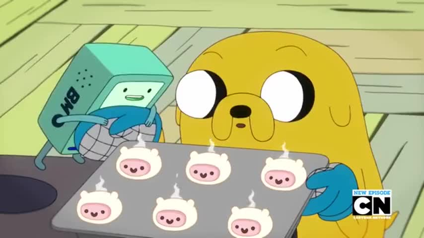

Finn Cakes

What better way to start a day than to fill your mouth with delicious FINN CAKES!!!
In this recipie you will be able to create sweet pancakes to impress your friends and family and most importantly, have fun yourself.
Ingredients
- Pancake Mix
- Milk
- Buttermilk Frosting
- Chocolate Chips
- Chocolate Filling
- Fondant (Candy Dough)
Steps
- Mix your milk and pancake mix and pour them into pancake cups.
- Bake your pancakes in the oven.
- Crumble your pancakes into a big bowl and mix it with some buttermilk frosting.
- Create a head shape with the mix and bake them for a short time.
- Fill the cakes' insides with chocolate frosting
- Cover the top with fondant (candy dough)
- Create mini Finn faces with chocolate chips
Enjoy your cakes, but make sure to save some for Finn the Human.
Recipie for the heavenly Perfect Sandwich, brought to you by the master chef of OOO, Jake the Dog.
Click HERE to go back to the main page.